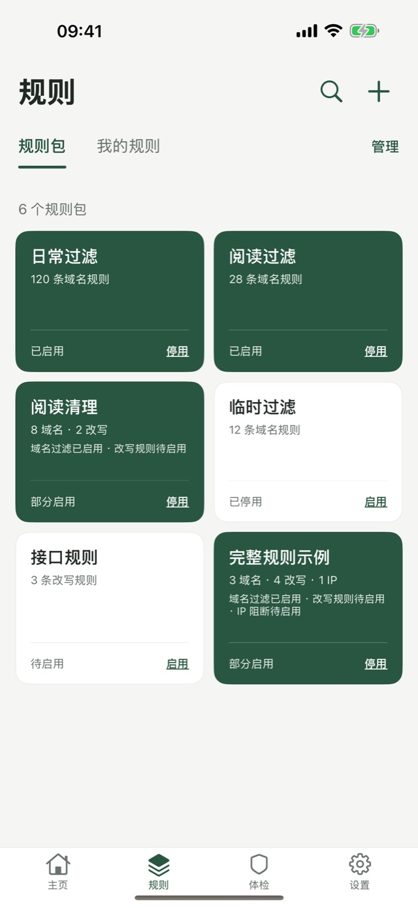
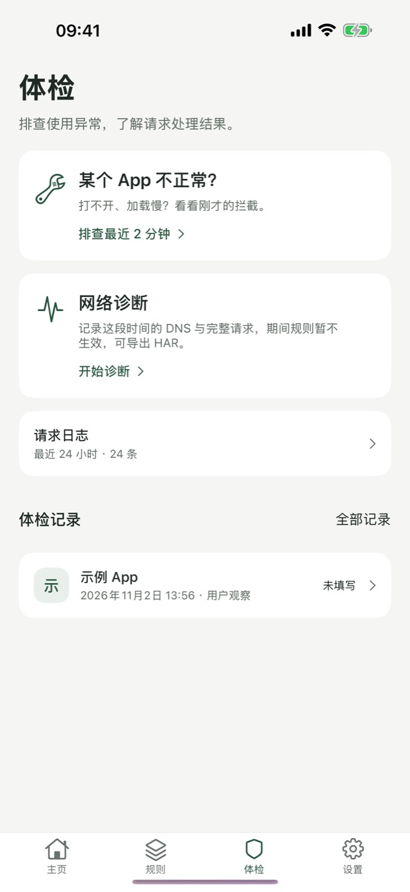
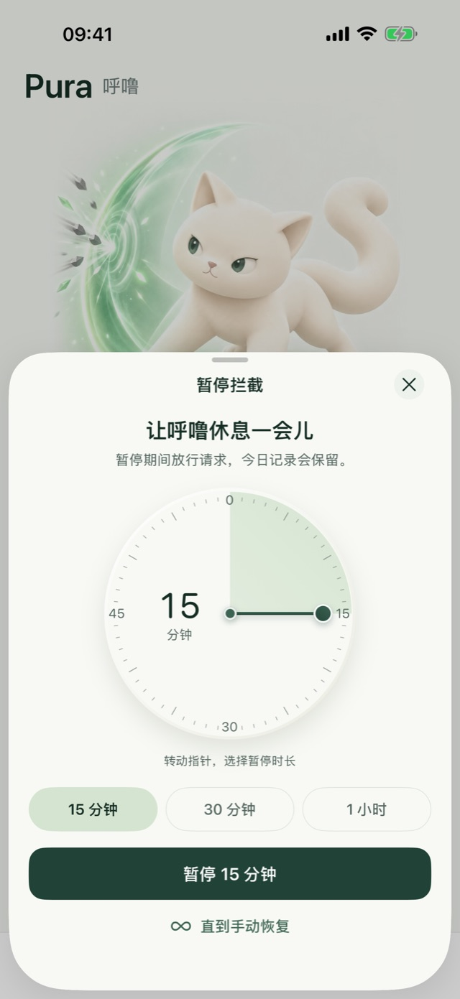

少一点打扰，多一点清净
Pura 在你的 iPhone 上按你启用的规则拦截广告与追踪域名。所有处理都在本机完成，没有账号，不收集任何数据。

三步开始
Pura 不附带任何规则。拦截什么、放行什么，都由你决定。
导入或添加规则
粘贴文本、选择文件或填写链接导入规则包，也可以手动添加要拦截的域名。
开启拦截
允许系统的本地网络配置后，Pura 在本机处理 DNS 请求，对所有 App 生效。
出问题就排查
某个 App 打不开？看看最近两分钟拦截了什么，确认后一键放行。
规则由你掌控
导入规则包前先预览：会拦截什么、放行什么、跳过了哪些行，都写得清清楚楚。
- 支持域名列表、hosts 等常见格式
- 放行规则与内置保护名单优先，系统与支付服务不受影响
- 每个规则包单独启用或停用，随时查看全部规则

App 打不开？马上排查
拦截难免误伤。体检把最近的拦截和请求日志摆在你面前，找到原因再决定放不放行。
- 查看最近 2 分钟被拦截的域名
- 请求日志按时间或域名查看处理结果
- DNS 请求采集，帮你找到值得写成规则的域名

随时暂停，自动恢复
需要临时放行时，转动指针选择暂停多久，时间一到自动恢复拦截。锁屏和灵动岛会显示当前状态。
- 15 分钟到数小时，按 5 分钟调整
- 没有启用的拦截规则时，Pura 不会接管网络
- 还能一步步引导你在系统设置中限制摇一摇跳转

数据只留在本机
Pura 没有服务器，也就没有地方存放你的数据。规则、日志和设置都保存在你的 iPhone 上。
- 没有账号
- 打开就能用，不需要注册或登录。
- 没有统计和广告 SDK
- 不接入任何分析、广告或崩溃上报服务，也不跨 App 追踪你。
- DNS 查询由你选择的服务解析
- 未被拦截的域名会发给你选择的公共 DNS，优先使用加密 DNS。

免费使用，按需升级
免费
永久免费
- DNS 过滤与手动规则
- 导入规则包
- 体检与请求日志
- 暂停与防摇一摇引导
Pura Pro
一次买断，价格以 App Store 为准
- 深度模式：为你确认的域名在本机改写或拒绝接口
- 本地备份与恢复
- 以后新增的工具功能
Pro 只解锁工具能力，不包含任何规则。过滤效果取决于你使用的规则、网络环境与 App 行为，并非所有广告都能去除。
常见问题
为什么开启后仍然有广告？
Pura 只拦截与你启用的规则匹配的域名。广告与正常内容同域、App 自建解析或规则没覆盖的域名，DNS 无法区分。用体检查看实际请求，再调整规则。
Pura 是 VPN 吗？
Pura 使用 iOS 的本地网络扩展在本机处理 DNS 请求，不会把流量转发到任何服务器，也不提供代理或跨网络访问。
为什么没有规则就无法开启？
Pura 只在有拦截规则时才接管网络。先在规则页导入规则包或添加域名，再开启。
深度模式安全吗？
深度模式默认关闭。证书在你的 iPhone 上生成，私钥不会离开设备；只有你逐个确认的域名才会被处理，随时可以停用并移除证书。
如何恢复购买或退款？
在「设置 → Pura Pro」中恢复购买。退款由 Apple 处理，可在 App 内或 Apple 的购买记录中申请。